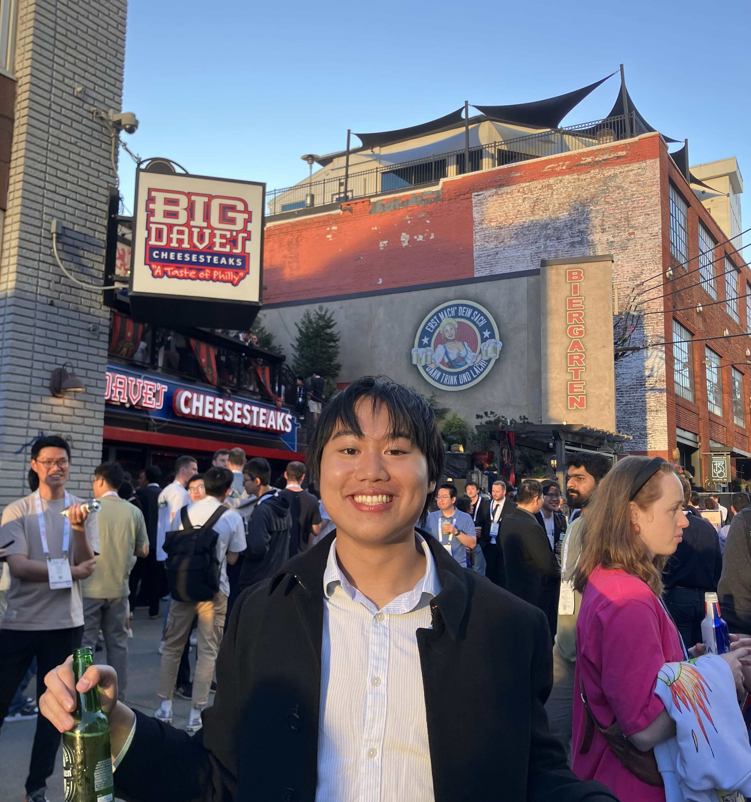
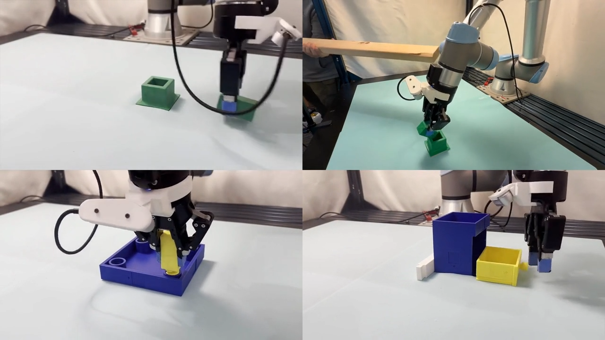
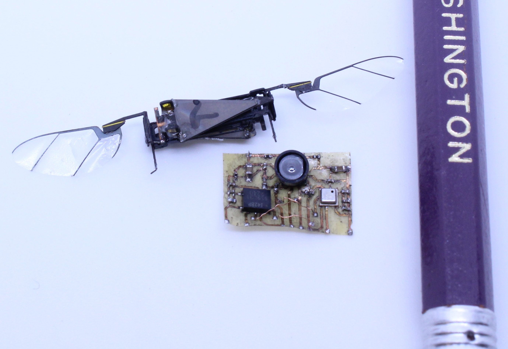

|
Josh Tran
I'm Josh, a MS student at the University of Washington. I am currently researching RL and IL for robotic manipulation at the WEIRD Lab under
Prof. Abhishek Gupta. During undergrad, I enjoyed two years working on state estimation for Flying
Insect Robots (FIRs) at the AIR Lab under Prof. Sawyer Fuller.
|
 |
{kind=link}
ResearchI'm interested in reinforcement learning and continual learning. |
|
 |
OmniReset: Emergent Dexterity via Diverse Resets and Large-Scale Reinforcement Learning
Patrick Yin*, Tyler Westenbroek*, Zhengyu Zhang, Joshua Tran, Ignacio Dagnino, Eeshani Shilamkar, Numfor Mbiziwo-Tiapo, Simran Bagaria, Xinlei Liu, Galen Mullins, Andrey Kolobov, Abhishek Gupta (* indicates equal contribution) ICLR 2026 project page / arXiv We leverage large-scale RL and diverse resets to solve dexterous, contact-rich manipulation tasks with no reward engineering or demos. We distill to RGB and show zero-shot sim2real transfer. |
|
 |
TinySense: A Lighter Weight and More Power-efficient Avionics System for Flying Insect-scale Robots
Zhitao Yu*, Josh Tran*, Claire Li, Aaron Weber, Yash P. Talwekar, Sawyer Fuller (* indicates equal contribution) ICRA 2025 Best Student Paper Award project page / arXiv Created the smallest viable avionics suite and first light and efficient enough for Flying Insect Robots (FIRs). |
In the News |

|
Allen School undergraduates make big contributions to autonomous flying robots with TinySense
Allen School News Kristine White, July 30, 2025 |
|
|
A new sensor system for insect-sized robots
UW Mechanical Engineering News July 14, 2025 |
|
Template from Jon Barron. |